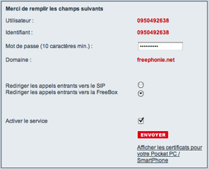
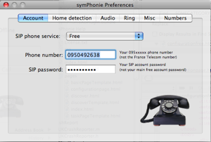
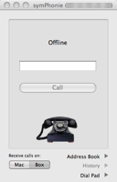

Configuration of symPhonie with FREE provider
symPhonie provides a very simple configuration for freephonie, SIP phone
services offered by Free french provider.
Follow the step by step instructions
Enabling SIP account from your Free management interface
- Login in free management interface
- chose "Gestion de mon compte SIP" item
- Choose a password
- If you wish to receive calls, chech the "Rediriger les appels entrants vers le SIP" item.
You will then have the choice, in symPhonie, to direct incoming call either to symPhonie or to your freebox.
When symPhonie is not launched, or when your MacBook is in sleep mode, calls will be directed to your freebox.

- check the "Activer le service" item, and click on "ENVOYER"
Configure symPhonie account
- Open symPhonie preferences
- Select "Account" item
- Select "Free" as SIP provider 
- Enter your phone number and SIP password
note: use your Free phone number, not your line (France Telecom) number - As soon as your phone number and password are correct, symPhonie will display the "offline" state. 
See also
Configuration of incoming calls with Free provider
Doing SOMETHING ELSE
SOMETHING Topics